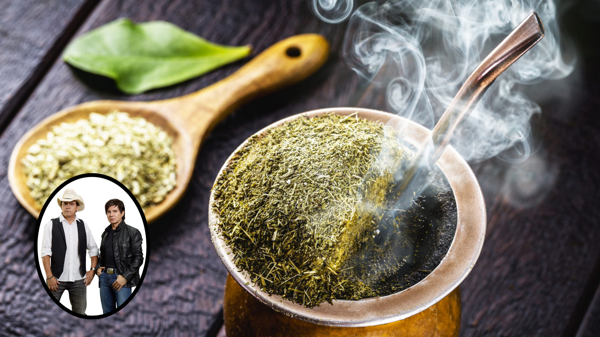

Chimarrão com Chitãozinho e Xororó

Ingredientes
- 2/3 de uma cuia de erva-mate
- água
- 1 cuia
Modo de Preparo
- Encha dois terços de uma cuia (vasilha onde se toma o chimarrão) com o mate.
- Depois, faça um montinho em um dos lados da cuia e despeje água morna ou quente até a boca.
- Espere 5 minutos antes de beber para dar tempo da erva inchar.
- O primeiro gole deve ser cuspido pois sempre vem com um pouco do pó do mate.
- Se quiser repetir, não precisa colocar mais mate, basta encher a cuia de água novamente.